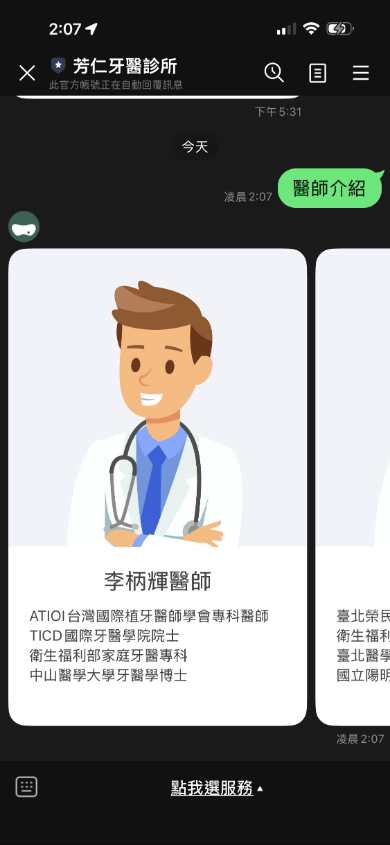
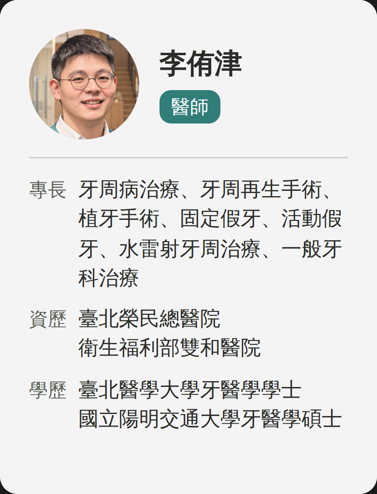
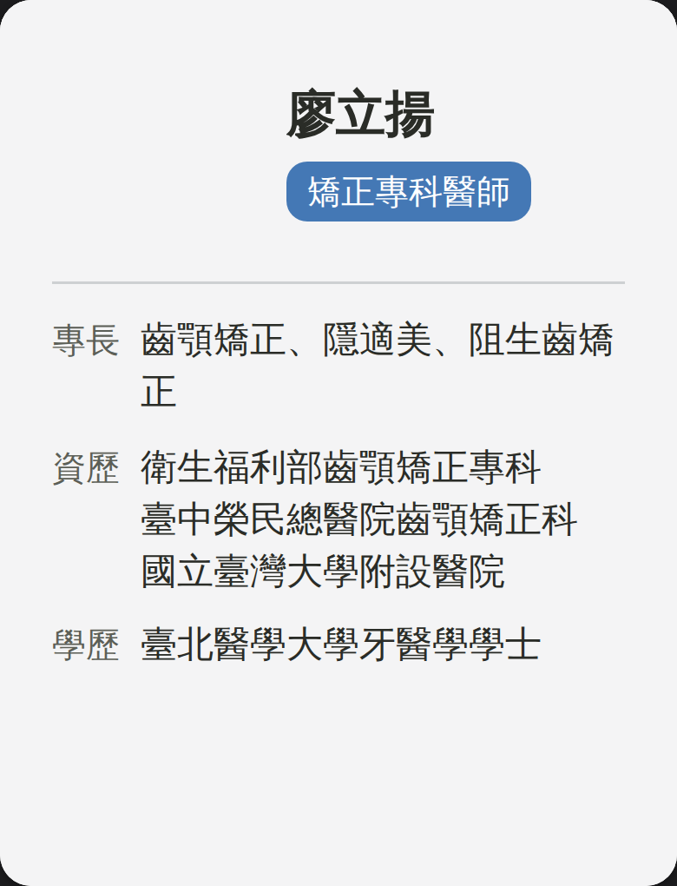
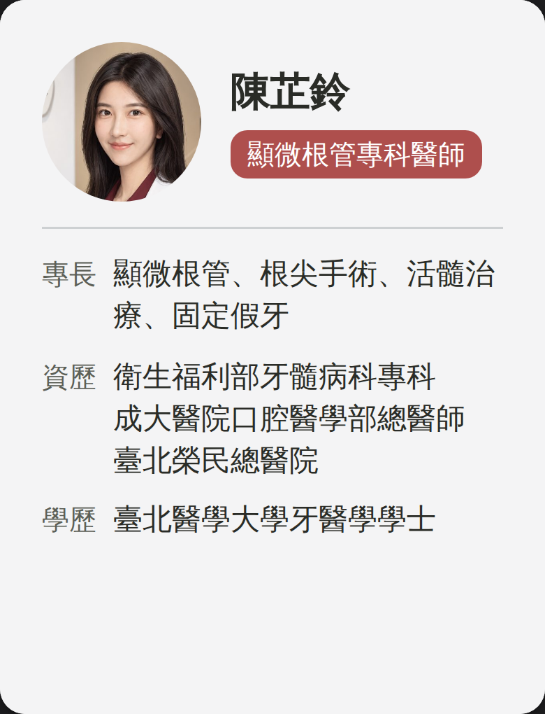

LINE「醫師介紹」改版規格
圖文選單「醫師介紹」回覆的 Flex Carousel。大插畫改成醫師本人小頭像。
1 現況 → 新版

2 新版九張





模擬圖，依 JSON 繪製。左右滑。
3 規格
| 觸發 | 圖文選單「醫師介紹」 |
|---|---|
| 訊息 | Flex Message・carousel・bubble 9 張 |
| bubble | size: "kilo"（實機測試定案） |
| altText | 芳仁牙醫的九位醫師 |
| 頭像 | 76×76px 圓形（box cornerRadius: 38px）・JPEG 400×400・無照片者留同尺寸空位（filler） |
| 字級 | 姓名 lg 粗・標籤 xs・欄位名 xs・內文 sm |
| 顏色 | 底 #F4F4F5・字 #2A2C27・欄位名 #5C5F57・分隔線 #CDD0D2・標籤底＝科別色、白字 |
| JSON | 16.3 KB（上限 50 KB）・可直接送出 |
| 照片網址 | 已寫在 JSON 內（fangren.net），保留 ?v= |
4 九位醫師
| # | 醫師 | 標籤 | 照片 |
|---|---|---|---|
| 1 | 李柄輝 | 創辦醫師#3F654A | 01-doctor-li-binghui-400.jpg |
| 2 | 李侑津 | 醫師#317D78 | 02-doctor-li-youjin-400.jpg |
| 3 | 王俊偉 | 矯正專科醫師#4478B5 | 03-doctor-wang-junwei-400.jpg |
| 4 | 廖立揚 | 矯正專科醫師#4478B5 | 無（留空位，不畫框） |
| 5 | 林晏妤 | 兒牙專科醫師#C28229 | 05-doctor-lin-yanyu-400.jpg |
| 6 | 許馨文 | 口外專科醫師#8E6299 | 06-doctor-xu-xinwen-400.jpg |
| 7 | 楊小瑩 | 贋復假牙專科醫師#465885 | 07-doctor-yang-xiaoying-400.jpg |
| 8 | 陳芷鈴 | 顯微根管專科醫師#AE4F4D | 08-doctor-chen-zhiling-400.jpg |
| 9 | 謝耀慶 | 兒童牙科#C28229 | 09-doctor-xie-yaoqing-400.jpg |
{kind=link}
{kind=link}
{kind=link}
{kind=link}
{kind=link}
{kind=link}
{kind=link}
{kind=link}
5 下載
全部下載（zip，1831 KB）- doctors-message.jsonFlex Message・41 KB
- photos/01-doctor-li-binghui-400.jpg李柄輝・26 KB
- photos/02-doctor-li-youjin-400.jpg李侑津・28 KB
- photos/03-doctor-wang-junwei-400.jpg王俊偉・25 KB
- photos/05-doctor-lin-yanyu-400.jpg林晏妤・28 KB
- photos/06-doctor-xu-xinwen-400.jpg許馨文・24 KB
- photos/07-doctor-yang-xiaoying-400.jpg楊小瑩・28 KB
- photos/08-doctor-chen-zhiling-400.jpg陳芷鈴・21 KB
- photos/09-doctor-xie-yaoqing-400.jpg謝耀慶・25 KB
- preview/doc-1.png新版 1・175 KB
- preview/doc-2.png新版 2・173 KB
- preview/doc-3.png新版 3・159 KB
- preview/doc-4.png新版 4・89 KB
- preview/doc-5.png新版 5・172 KB
- preview/doc-6.png新版 6・163 KB
- preview/doc-7.png新版 7・170 KB
- preview/doc-8.png新版 8・155 KB
- preview/doc-9.png新版 9・177 KB
- preview/now-1.png現況・74 KB
- preview/now-2.png現況・77 KB
{kind=link}
{kind=link}
{kind=link}
{kind=link}
{kind=link}
{kind=link}
{kind=link}
{kind=link}
{kind=link}